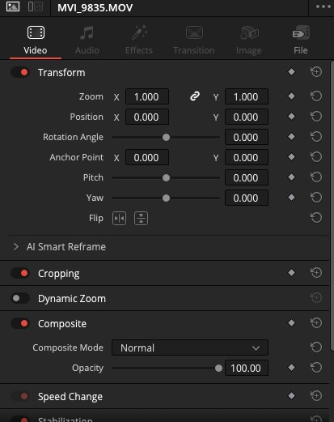
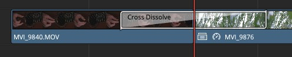
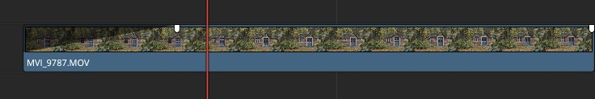
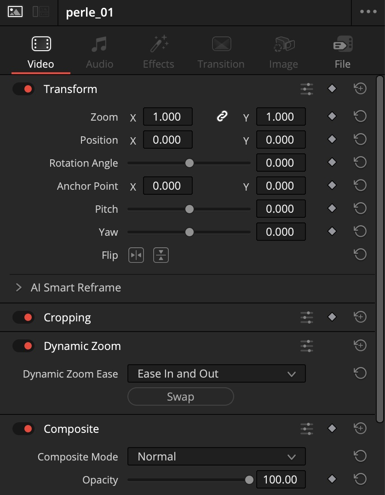
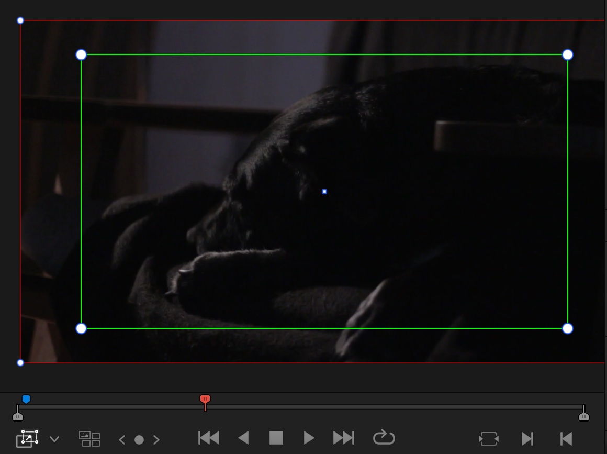
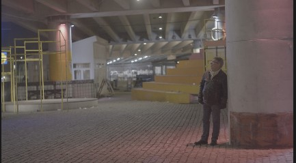
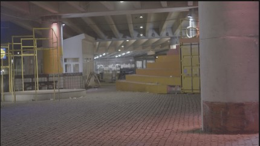
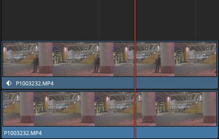
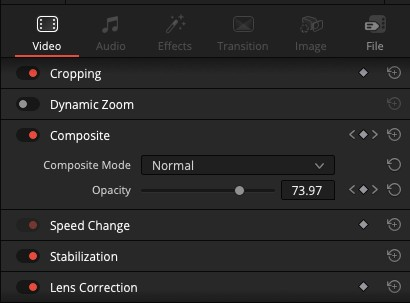
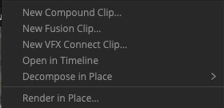

Første del · Vis 4
Inspector
Vis · 4 min
Kig med. Hænderne væk fra musen.
-
Åbn Inspector
Vælg et klip på timelinen, og klik på Inspector i øverste højre hjørne. Her styrer du klippets egne indstillinger. I dag bruger du Transform: zoom, position og rotation.
Er du kommet for langt ud? Den lille pil ud for hver indstilling sætter den tilbage til udgangspunktet.

Der er mange sektioner. I dag bruger du kun Transform og Dynamic Zoom.
Anden del · Vis 4 → Gør 8
Overgange og fades
Vis · 4 min
Kig med. Hænderne væk fra musen.
-
Sæt en Cross Dissolve ind
Klik på klippepunktet, hvor to klip mødes på timelinen, højreklik, og vælg Add Transition. Eller tryk Ctrl + T (Windows) / Cmd + T (Mac). Standarden er Cross Dissolve. Flere ligger under Effects → Video Transitions.

Overgangen tegnes direkte på timelinen. -
Lav en fade med håndtaget
Den hurtigste fade, ingen menuer. Før musen hen over det øverste hjørne af et klip, og træk den lille firkant ind mod midten. Det virker i begge ender af klippet.

Gør · 8 min Åbn, når jeg siger nu Nu er det dig
Start i Opg 4 START
Sæt 2-3 overgange ind i introen, der hvor stemningen skifter, og fade introen ud til sidst.
Sådan
- Overgang: klik på klippepunktet, hvor to klip mødes, og tryk Ctrl + T (Windows) / Cmd + T (Mac). Se trinet
- Fade ud: træk den lille firkant i øverste hjørne af det sidste klip ind mod midten. Se trinet
Hvornår skal jeg bruge en overgang?
Sparsomt. En overgang markerer et tidsspring eller et stemningsskift. Brug den ikke bare for at blødgøre et almindeligt klip. Det sender et forkert signal til seeren, og det er et godt fif at give videre til eleverne.
Tredje del · Vis 4 → Gør 12
Dynamic Zoom
Vis · 4 min
Kig med. Hænderne væk fra musen.
Et langsomt zoom ind eller ud på et stillestående billede. Det giver liv til et roligt klip, og det kræver ingen keyframes.
-
Slå Dynamic Zoom til
Vælg et klip, og find Dynamic Zoom i Inspector. Slå den til med kontakten ud for overskriften.

-
Sæt start og slut i billedet
Skift viewerens overlay til Dynamic Zoom med menuen i nederste venstre hjørne af viewer. Den grønne ramme er, hvor klippet starter, den røde, hvor det slutter. Træk i rammerne, og spil klippet.

Overlay-menuen sidder nederst til venstre under billedet. -
Vend og blødgør
Swap i Inspector bytter start og slut, så et zoom ind bliver et zoom ud. Vælg Ease In and Out i menuen Dynamic Zoom Ease, så bevægelsen starter og slutter blødt.
Gør · 12 min Åbn, når jeg siger nu Nu er det dig
Start i samme timeline, du arbejder i
Dynamic Zoom på 2-3 rolige klip i introen. Prøv både ind og ud.
Sådan
- Vælg et roligt klip, og slå Dynamic Zoom til i Inspector. Se trinet
- Skift viewerens overlay til Dynamic Zoom, og træk i den grønne ramme (start) og den røde (slut). Se trinet
- Zoom ud i stedet for ind: Swap. Blødere bevægelse: Ease In and Out. Se trinet
Jeg kan ikke se rammerne i billedet
Overlayet er ikke slået til. Brug menuen nederst til venstre under billedet i viewer, og vælg Dynamic Zoom.
Hurtigt færdig? Prøv ekstraopgaven nederst.
Checkpoint
Næste opgave starter i Opg 5 START.
Hurtigt færdig?
Få en person til at forsvinde. Åbn mappen 04 OPGAVE 4 · Liv / Ekstra · Composite, og spil timelinen Opg 4 Ekstra FACIT. Byg derefter effekten selv i Opg 4 Ekstra START. Der ligger to stykker af samme optagelse: ét med personen og ét uden. Læg dem oven på hinanden på hver sit spor. Kameraet stod stille under hele optagelsen.


Jeg aner ikke, hvor jeg skal starte
Baggrunden er den samme fra start til slut. Se hele klippet i source viewer: er der et tidspunkt, hvor personen slet ikke er i billedet?
Sådan er den lavet Klik, når du har prøvet selv, eller er gået i stå
-
Læg klippet ned to gange
Samme kildeklip på to spor oven på hinanden. Øverst: trimmet til stykket, hvor personen står. Nederst: trimmet til et senere tidspunkt, hvor personen er gået.

-
Keyframe Opacity på det øverste lag
Inspector → Composite. Sæt playheadet ved starten, og klik diamanten ud for Opacity ved 100 %. Flyt playheadet et par sekunder frem, og sæt Opacity til 0 %.

-
Saml det i et Compound Clip
Marker begge klip, højreklik, og vælg New Compound Clip. Nu er det ét klip på timelinen. Dobbeltklik for at redigere lagene igen.
